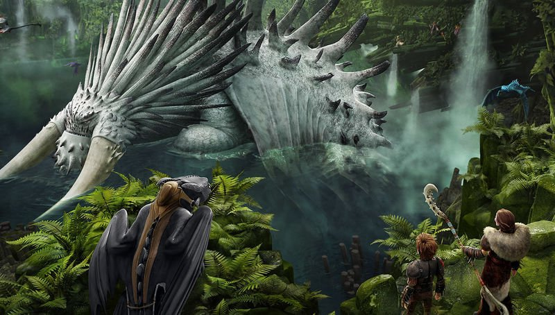

Como Treinar o seu Dragão 2

How to Train Your Dragon 2 (bra: Como Treinar o Seu Dragão 2; prt: Como Treinares o Teu Dragão 2) é um filme de animação computadorizada americano de 2014, dos gêneros aventura, fantasia, comédia e ação, dirigido por Dean DeBlois para a DreamWorks Animation , com roteiro de William Davies , Dean DeBlois e Chris Sanders . How to Train Your Dragon 2 recebeu o Globo de Ouro de melhor filme de animação e o Annie Award de melhor filme de animação em 2015. Foi indicado também ao Oscar de melhor filme de animação, vencido por Big Hero 6 .
Enredo
Soluço convive com o dragão Fúria da Noite, agora que os dragões não causam mais medo à ilha de Berk, que os vê com outros olhos. Um dia, Soluço encontra centenas de novos dragões numa caverna secreta, que não pretendem facilitar a vida dos habitantes da ilha.
Elenco
- Jay Baruchel como Soluço Haddock III: O filho adolescente sofisticado e brilhante do chefe viking de Berk, Stoico. Seu melhor amigo e dragão é o Banguela, um Fúria da Noite.
- America Ferrera como Astrid Hofferson: Uma adolescente forte e independente e excelente lutadora. Ela também é a namorada de Soluço e companheira Cavaleira de Dragão. Seu dragão é a Tempestade, uma Nadder Mortal.
- Cate Blanchett como Valka Haddock: Uma salvadora de dragões e a mãe de Soluço.
- Gerard Butler como Stoico, o Imenso: O chefe viking de Berk, que também é o pai de Soluço e o marido de Valka. Ele acaba morrendo no decorrer do filme.
- Craig Ferguson como Bocão Bonarroto: Um experiente Viking, ferreiro e dentista de dragão.
- Jonah Hill como Melequento Jorgenson: Um dos Cavaleiros de Dragão cujo orgulho e arrogância muitas vezes levam a melhor sobre ele.
- Christopher Mintz-Plasse como Perna-de-Peixe Ingerman: Um dos Cavaleiros de Dragão e um leitor de livros sobre os muitos traços e características da maioria das espécies de dragões.
- T.J. Miller como Cabeça-Dura Thorston: Um Cavaleiro do Dragão e um dos gêmeos fraternos briguentos que compartilham um Zipper Arrepiante de duas cabeças. A cabeça que ele dirige chama-se Arroto.
- Kristen Wiig como Cabeça-Quente Thorston: Uma Cavaleira de Dragão e uma dos gêmeos fraternos briguentos que compartilham um Zipper Arrepiante de duas cabeças. A cabeça que ela dirige é chamada de Bafo.
- Djimon Hounsou como Drago Sanguebravo: Um caçador de dragões, também o principal antagonista.
- Kit Harington li como Eret, Filho de Eret: Um ex-caçador de dragões que costumava trabalhar para Drago Sanguebravo, mas agora se juntou aos Cavaleiros de Dragões.
- David Tennant como Gosmento Jorgenson: pai de Melequento.
Bilheteria
O filme foi um sucesso de bilheteria, estreando com US$ 49 milhões no seu primeiro final de semana, ultrapassando o primeiro filme que fez US$ 43,7 milhões em 2010[7]. Com arrecadação de US$ 177 milhões na bilheteria doméstica e US$ 444,5 milhões noutros países, somou no total US$ 621,5 milhões. tornando-se a maior arrecadação da trilogia. O filme teve a segunda maior bilheteria de uma animação em 2014 atrás somente de Operação Big Hero .
Recepção
Assim como seu antecessor, o filme também foi aclamado mundialmente pela crítica. O portal agregador de críticasRotten Tomatoes relata que 92% dos críticas deram uma crítica positiva para o filme, com base nas avaliações de 180 críticos profissionais. O consenso dos críticos é: "Emocionante, emocionalmente ressonante e lindamente animado, How to Train Your Dragon 2 se baseia nos sucessos de seu antecessor da mesma maneira que uma sequência". No Metacritic , o filme tem uma classificação média ponderada de 76/100, com base em 44 avaliações de críticos, indicado "críticas geralmente favoráveis".